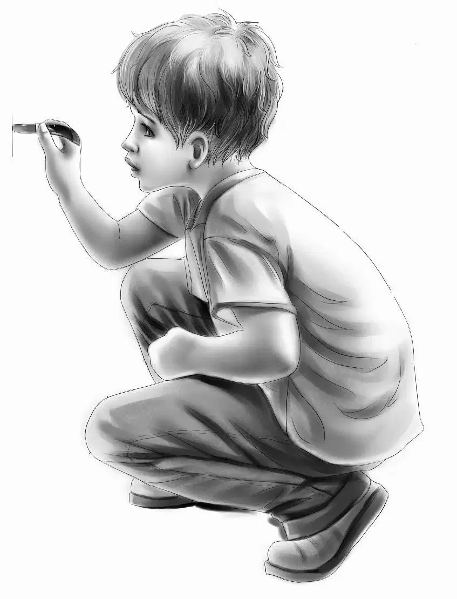
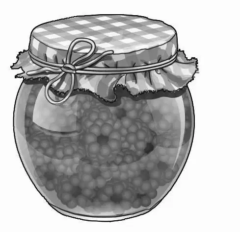
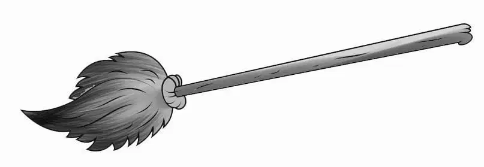
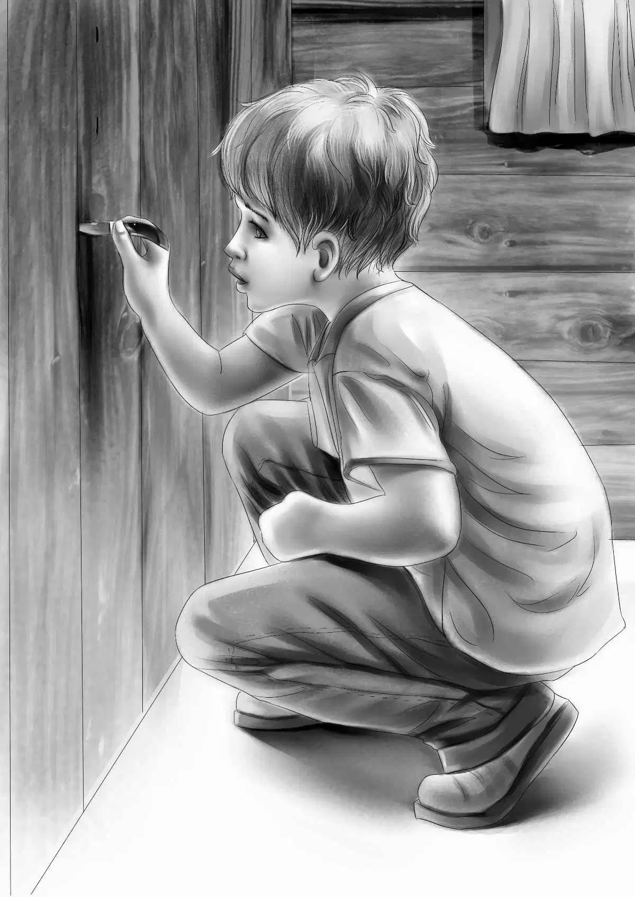
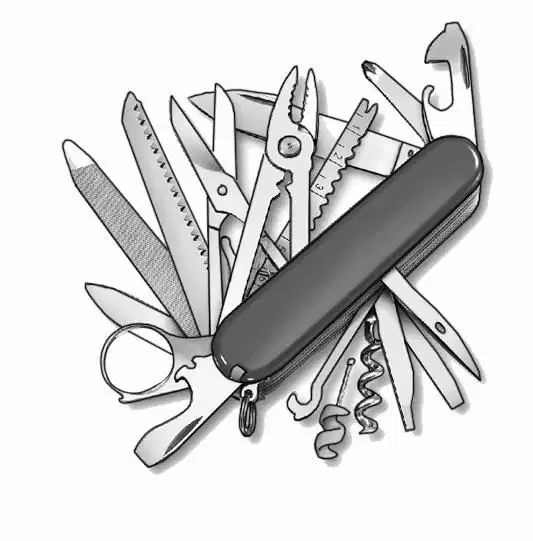

Benny’s Puzzle

第二天清晨，太阳出来了。
“多好的天气啊！”维莉说，“尤其是大雨过后，更是格外晴朗。”
“今天可是咱们出去捡核桃的日子呢！”班尼说道。
然而此时他还不知道，这一天他们将会过得非比寻常。
“咱们该用什么来装核桃呢？”杰西一边问，一边里里外外地忙活着，“看起来购物袋不错，够结实。”
“吃完早饭就出发吧！”班尼说，“反正不需要叠被子——咱们用的是睡袋。”
“我想从咱们这儿到核桃树的距离，应该相当于到商店的一半。”亨利说。
“这算什么。”班尼说，“眨眼就走到了。”说话间，他拿起一个空袋子，和望望一起率先走了出去。
谁都不知道落叶下还掩盖着多少核桃，树林里似乎到处都是肥硕的灰松鼠，它们在小路两旁的树丛中追逐嬉闹着，并对孩子们闯入它们的林地表示着抗议。
不一会儿，孩子们便找到了那些核桃树，它们密密丛丛，枝叶繁茂。
“咱们到地方啦！”杰西说，“可以开工咯！”
班尼用一根捡来的长树枝在干枯的落叶中扒拉翻找着，其他几个孩子也纷纷找来了树枝，加入其中。地上果然有山核桃，有的带着青皮，有的外壳已经长坚硬了，它们静静地躺在枯叶之中。
“就留着外壳好了。”亨利说，“反正咱们有一整天的时间来剥皮呢。”
装核桃的袋子渐渐满了，看来除了松鼠之外，似乎没人来这里捡过核桃。
“咳，咱们要捡多少才够？”班尼问道，“我已经捡了51个啦。”
“干吗要问这个，班尼？”杰西说，“捡核桃不是挺好玩的么？”
“是好玩。”班尼说，“可我想，咱们一会儿还要到商店去呢。”
“对！”亨利说，“那就把袋子先放在这儿吧。”
“绝对不行！”班尼说，“我可不放心那些松鼠！等咱们一走，它们立马就会拢过来，解开袋子吃个底朝天！”
说完，班尼静静地站了一会儿，最后，他的目光落在一个树桩上：“亨利，没人愿意扛着四袋核桃走上1.25英里，再原路返回，对吧？要不，咱们把核桃藏在树桩的洞里，再用些厚树枝盖起来？”
“可以试试。”亨利赞同道。
就这样，孩子们把四袋核桃塞进洞里，又拖来几根常青树的树枝盖在上面。
“好啦！”杰西说，“现在松鼠肯定钻不进去了，亨利。”
“可不是吗？绝对的！”亨利说，“再说，咱们很快就会回来的。”
孩子们刚一推开商店门，便听到托马斯·尼尔森的招呼声：“啊哈，你们好，奥登家的孩子们！”
“您好啊！”杰西笑着说，“今天是个好天气，所以我们去捡核桃了，捡了整整四大袋山核桃呢。”
“好棒！”托马斯·尼尔森赞道，“我来告诉你们怎么做核桃料理：先把核桃砸开，取出核桃仁，然后跟绞碎的苹果拌在一起做沙拉，会相当美味的！”
话音刚落，尼尔森太太和帕奇便从楼梯上走了下来。“我听到你们在谈天气。”芭芭拉说，“不过，据我估计，这样的好天气持续不了多久，感觉大风暴就要来了。”
“没关系，我们以前也遇到过风暴。”班尼说，“记得那次是旅行中遇到的，我们被大雨困住，只能靠土豆填饱肚子，除了土豆什么都没有。”
“这倒提醒我了，”杰西说，“咱们可以买些土豆，在壁炉里烤着吃。”
于是，她挑了12个土豆，又买了些小面包、葡萄干果酱、白糖和几个鸡蛋，接着，孩子们便准备打道回府了。
亨利看了看手表，说：“都快中午了。”
“要把那些核桃都带回去可得花不少时间呢。”班尼说，“希望它们还在树洞里。”
核桃果然还在，不过，当孩子们走近时，两只松鼠正从那堆厚厚的树枝上仓皇逃离。
回到小屋后，杰西提议：“现在咱们分头去找石头吧，要平的那种，一块用来当垫板，一块用来砸核桃。”
“就像印第安人那样，”维莉说道，“做个剥壳器。”
石头找到了，孩子们仔细地擦掉了上面的泥土和落叶。
“动手砸吧。”杰西说，“砸完后再把核桃仁挑出来。”

“不要，咱们还是先吃午饭吧。”班尼说，“就吃花生果酱三明治配牛奶，花不了多少时间的。”
简单吃过午饭后，孩子们坐到了地上，各自将大平石摆在面前，将核桃砸开，再将核桃连皮带果仁一起扔进炖锅里。
忙活了差不多一个小时，杰西终于开腔了：“咱们把地板扫干净好了，到处都是核桃壳。”随即，她站起身，四处找起扫帚来。
“我昨天就找过了。”维莉说，“可是没有。”
“按说应该有的啊，可能是放在哪儿了，咱们没看到而已。”杰西说。
“奇怪啊！”班尼说，“扫帚柜应该就在壁炉旁才对，我记得之前见过的一座木屋就是这样的构造。”
“可这座小木屋里确实没有，班尼。”维莉说道，“还是算了吧。”
不过班尼并没有罢休，还是在继续寻找，他把两把铁锹和一把斧子搬到另外一个角落，猛地发现壁炉向外凸出了一英尺。班尼仔细看了看，发现墙面是由窄板构成，每块木板之间都有条细线，像是裂缝一般。
“这儿原本应该有一个门把手，”班尼说道，“可是现在只剩下了一个小洞。”班尼回想了一下自己刚才的话，突然叫起来：“洞！这上面有个洞！”
他从兜里掏出折叠小刀，打开了其中最大的一把。
其余几个孩子全都围拢过来，只见班尼兴冲冲地撬着墙板，想找到松动的地方，他果然成功了：墙板的上方首先被撬起来，他用力一拉，一扇暗门被打开了。
“哇哦！”亨利叫了起来，“班尼真厉害，还真是扫帚柜呢！”

“柜子是固定在地板上的！”杰西大声说。

“而且，里面还真有一把扫帚。”维莉说道。
只见柜子里放着一把扫帚、一个垃圾盘和一个木架子，架子上面放着抹布和两块肥皂，此外，还有一个小小的断裂的白色门把手。
亨利看了看柜子，又看了看架子：“这木头已经很旧了。”他说，“估计托马斯·尼尔森的爷爷很早之前就建了这栋房子。”
“你怎么看出来很旧了，亨利？”
“伸手摸摸架子下面，”亨利说，“能摸到斧子留下的痕迹吧？如果架子是最近做的，一定会很平滑。”
班尼摸了摸架子下面，果然摸到了斧子留下的痕迹。“这方法不错。”接着，他又摸了摸门。
“这个可不一样。”亨利说，“门板两侧都抛过光，因此比较光滑，不过估计也有些年头了。”
“这上面也有印记呢！”班尼叫道，“瞧，亨利，是字迹，虽然有点模糊，可还是看得清！”
他念了起来：
1/M 1/4B 1/4S 1S 1Y
1/4W 1E ？ 3F R
孩子们面面相觑。
“这是什么意思？是密码吗？”杰西问道，“赶紧抄下来，亨利，就抄在纸上，咱们可以研究研究。”
亨利动手抄了起来：“我一点儿都看不明白，就算研究了，也没多大意义。”
“我也看不懂。”班尼说，“依你们看，这些字母到底代表什么？”
杰西在桌旁坐了下来：“让我想想。有一件事可以肯定，那就是尼尔森一家想在木屋里寻找些什么。”
“而且，这件东西他们不想让咱们知道。”班尼赶紧补充道。
亨利看了看弟弟，说道：“没错，班尼，每次帕奇一跟咱们提起这个，他们就会脸红，好像很羞愧的样子。”
“可他们人都很好啊！”维莉补充道。
杰西点了点头：“这就是问题之所在，我们可以设想一下，也许尼尔森先生很久之前做过什么错事。”
“可他究竟想找什么呢？”班尼问道，“也许是找刚才咱们发现的密码，有了这些密码，就能找到财宝或是什么重要的东西。”
“可奇怪的是，尼尔森一家并没找到想要的东西，他们至少该知道这里有个暗格，里面放了把扫帚才对。”维莉说。
亨利点了点头：“我明白班尼的意思，那些字母应该是尼尔森先生的爸爸或者爷爷刻上去的——这是肯定的，而且，这么做绝对不是因为好玩。既然尼尔森先生不想告诉咱们密码的事，咱们也就什么都别说，他们不提，我们就别问。”
“好。”班尼说，“那下次咱们去商店时，看看他们怎么说吧。”
“秋季天黑得早，”亨利说，“现在太晚了，没办法上去修房顶了。班尼，把收音机打开，听听明天的天气怎样。”
等了半个小时，孩子们终于听到了天气预报。
只听见播报员说道：“南方、西方将有一股风暴逼近，但不会经由本地区，而是会继续北上，本地区丝毫不受影响。北部新英格兰诸州应做好准备，应对风暴袭击。”
“这就不用担心了。”班尼说着，关掉了收音机。

吃完饭的时候，天色已经黑得伸手不见五指了。
“咱们明天干什么？”班尼吃完最后一口汉堡，问道。
“修房顶啊！”亨利说，“你可以来帮忙，班尼。咱们要先找到松鼠进出的洞口，然后在上面钉块木板。”
此时亨利还不知道，他的计划很快就要被打乱。
上床的时候，班尼说：“也许咱们发现的密码就是用来赶跑松鼠的呢！”说着，他大笑起来。